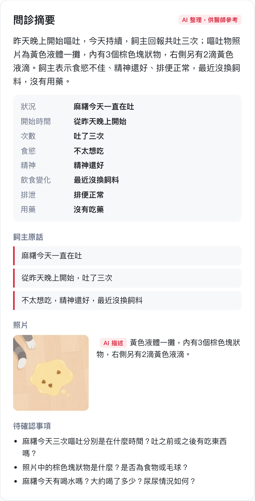
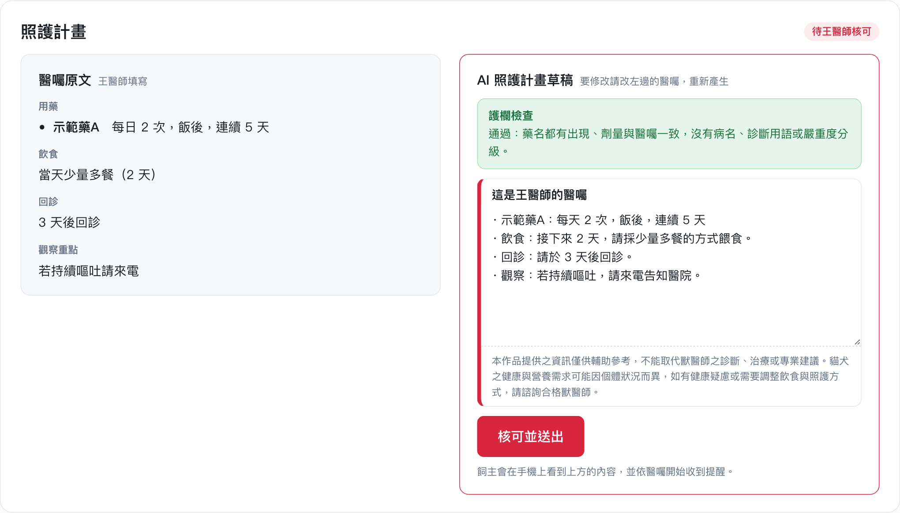
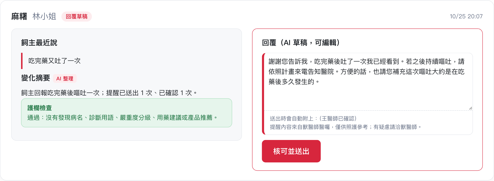
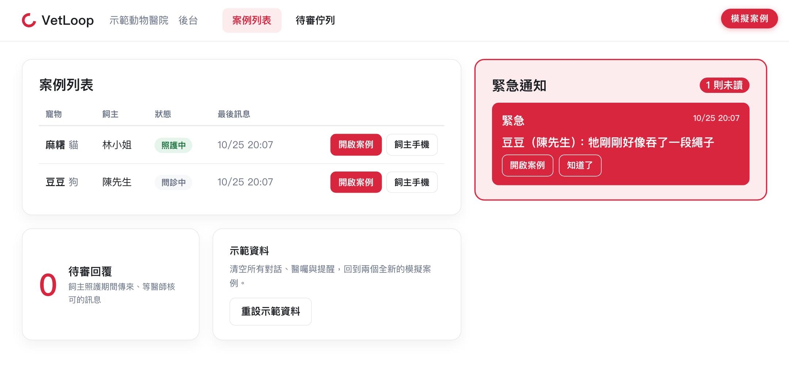

01
提案摘要
以簡短內容協助評審快速掌握提案核心
作品與問題
- 作品：VetLoop，獸醫在環的照護 Prototype
- 主題：獸醫照護
- 問題：就醫後的居家照護，飼主回報分散；醫囑轉成白話與提醒靠人工，獸醫難以即時掌握
方案與價值
- AI 把飼主的問診整理成摘要，獸醫檢視後開醫囑
- AI 把醫囑改寫成白話照護計畫，獸醫核可後才送出
- 照護期間依醫囑定時提醒；飼主回報由 AI 起草回覆，獸醫審核後才送出
緊急分流：訊息含緊急字眼（例如誤吞異物）時，不經 AI，直接請飼主立即致電醫院，後台同步轉紅通知。
獸醫端的「修改醫囑」會先存成待核可版本，核可前飼主端不會有任何變化。
本作品提供之資訊僅供輔助參考，不能取代獸醫師之診斷、治療或專業建議。貓犬之健康與營養需求可能因個體狀況而異，如有健康疑慮或需要調整飲食與照護方式，請諮詢合格獸醫師。
從飼主原話擷取 8 個欄位；追問句是固定的，AI 不自行寫追問。
AI 整理問診摘要；醫囑用藥行照原文產生，其餘由 AI 改寫成白話。
飼主回報後 AI 起草回覆，放進待審佇列，獸醫改字後核可才送出。
規則比對：AI 產出不得含病名、診斷、劑量建議或品牌；緊急字眼不經 AI。
本作品提供之資訊僅供輔助參考，不能取代獸醫師之診斷、治療或專業建議。貓犬之健康與營養需求可能因個體狀況而異，如有健康疑慮或需要調整飲食與照護方式，請諮詢合格獸醫師。




本作品提供之資訊僅供輔助參考，不能取代獸醫師之診斷、治療或專業建議。貓犬之健康與營養需求可能因個體狀況而異，如有健康疑慮或需要調整飲食與照護方式，請諮詢合格獸醫師。